| Volume 3 - Year 2015 - Pages 9-19 | View PDF (Full-text) |
| DOI: 10.11159/ijtan.2015.002 | Linked References |
| ISSN: 1929-1248 | |
Synthesis of Dispersed and Self-Assembled Metal Particles in Epoxy via Aqueous to Organic Phase Transfer Technique
Noorul Ain Mohd Akib1, Nor Hashila Mohd. Hirmizi1, Wei Leng Tan1, Noor Hana Hanif Abu Bakar1, Mohamad Abu Bakar1*, Jamil Ismail1, 2, Cheng Hoon Teoh1, 3, Chun Hwa See3, 4
1Nanoscience Research Laboratory, School of Chemical Sciences,
Universiti Sains Malaysia, 11800 Penang, Malaysia
naakib06@yahoo.com; nhashila@gmail.com; weileng728@gmail.com; hana_hanif@usm.my; bmohamad@usm.my
2Faculty of Industrial Sciences and Technology, Universiti Malaysia Pahang,
Lebuhraya Tun Razak, 26300, Gambang, Kuantan, Pahang, Malaysia
jamishoot@yahoo.com
3Intel Technology (M) Sdn. Bhd., Bayan Lepas FTZ, Phase III, 11900 Penang, Malaysia
cheng.hoon.teoh@intel.com
4BCI Technology Sdn Bhd., Lot 7, Jalan BS 7/22, Taman Perindustrian Bukit Serdang,
Seksyen 7, 43300 Sri Kembangan, Malaysia
chun.hwa.see@bcichemical.com.my
Abstract- A convenient and effective method of dispersing gold (Au), silver (Ag) and copper (Cu) particles in epoxy is described. Particles were synthesized in aqueous phase and subsequently dispersed in toluene-epoxy with or without the presence of curing agent. Sodium borohydride and 2-propanol were used as reducing and phase transfer agents respectively. The surface plasmon resonance (SPR) at ~ 540-620 nm, ~ 525 nm and ~450 nm confirms the presence of Cu, Au and Ag nanoparticles in the composites. No chemical interaction occurred between the metal particles and the epoxy or cured epoxy. Increase in epoxy content caused the size of the particles to decrease for all metals. The average particle size for Au, Ag and Cu in 1% and 10% epoxy are 3.9 nm and 2.5 nm, 10.1 nm and 3.2 nm as well as 8.1 nm and 5.9 nm respectively. Similar decreasing trend was also observed upon addition of curing agent. In all cases, metal nanoparticles exhibit self-assembly with inter-particle spacing of <10 nm. The absence of any curing peak in the DSC thermograms suggests that the composites are well cured before any of the DSC analyses were performed. The Tg of the metal-cured epoxy is higher than neat epoxy, that is 71.3 °C, 69.8 °C and 62.0 °C for Cu, Au and Ag respectively.
Keywords: Copper, Gold, Silver, Particles, Epoxy, Composite.
© Copyright 2015 Authors - This is an Open Access article published under the Creative Commons Attribution License terms. Unrestricted use, distribution, and reproduction in any medium are permitted, provided the original work is properly cited.
Date Received: 2014-09-29
Date Accepted: 2015-03-24
Date Published: 2015-06-08
1. Introduction
Nanocomposites are comprised of two or more components of which at least one is in the nanometer dimension [1]. The nanosize component in the nanocomposite exposes enormous surface area and interfaces when compared to the component in the conventional composite. Hence, nanocomposites may exhibit properties that promise a wider or better performance and the ensued applications as compared to conventional composites. For example, nanocomposites comprising of polymer and nanosize fillers such as metal oxide or carbon has been shown to exhibit unique electrical [2 - 4], thermal [5, 6] and optical [7, 8] properties.
The conductive characteristic of metal-polymer nanocomposites has created intense interest among researchers. It is known that the distribution or topology of nanosized metal particles in a polymer exert effect on these properties. The metal entities can form an inter-particle network that creates a path where electron(s) can migrate from one particle to another hence facilitating electrical or thermal conduction [9]. On the other hand, particle aggregation creates voids between particles which disturb the continuous path or linkage [10]. Thus, well dispersed particles that form inter-particle network/assembly along with narrow inter-particle spacing are much desired for conduction.
Epoxy resin is a material that is widely used in electronic packaging. It offers properties such as high impact strength and adhesion [11]. Incorporation of metal or carbon based fillers into the resin may affect the electrical property of the resultant composite e.g. from an insulator to a conductor [9, 12]. Silver is a frequently used metal in such composites [13, 14] due to its high thermal and electrical conductivity [15, 16]. Copper and gold are also conductors that are comparable to silver. Gold is the most stable against oxidation however, is expensive. Copper, on the other hand, is cheaper and therefore a good substitute to silver and gold.
The available physical techniques such as milling process [17] employed in the preparation of metal-polymer nanocomposites usually lead to wider distribution and poor dispersion of the particles. There are also some chemical routes that have been reported which instantly provide a better particle distribution and dispersion. These chemical routes include microelmusion [13], chemical reduction [18, 19] and UV reduction [20]. Even so, when particles are successfully incorporated and dispersed into the polymer matrix, these particles tend to agglomerate upon heat treatment (such as curing) forming secondary clusters via the interruption of inter-particle arrangements and consequently this leads to poor conduction [13].
Rong et al. [13] have shown the effect of temperature on silver-epoxy nanocomposite systems. They found that heating the system at temperatures which exceeds the melting point of the metal causes the metal phase to grow and aggregate. This indirectly leads to a lower conductivity, which is a handicap in electronic packaging industries. Recently, Chen and co-workers [21] have successfully prepared highly conductive epoxy composited with silver coated copper flakes via in-situ generation and sintering silver nanoparticles during curing process. The sintering process not only prevent the oxidation of Cu, it also increase the contact area among the metal flakes, thus improve its conductivity. Nam et al. [22] and Chen et al. [23] also reported that the thermomechanical and dielectric properties as well as electrical and thermal conductivity of the silver-epoxy nanocomposites can be altered via the addition of silica particles. Chen and co-workers [24, 25] demonstrated the role of ethanol as diluents to control the dispersion of silver nanoparticles and nanowires to fill in the gap in between the silver flakes in a composite. They found that the existence of silver particles/wires provides extra paths for electron conduction, thus higher conductivity is achieved.
Therefore, understanding the nature and exploring methods to improve the composite material performance is desired. This is especially true for the preparation and performance of metal-filled composites for application as conductive materials which has remained a challenge to scientists. As an alternative route, this study focuses on the dispersion of copper, gold and silver nanoparticles in epoxy by employing the phase transfer method. The effect of epoxy, with or without the (ambient temperature) amine curing agent, on the dispersion of metal particles is investigated. Several techniques to determine particle dispersion are reported. These techniques include suspension [26], turbidity [27], CO adsorption [28] and the approximate methods via SEM and optical images. In this work, the fractal technique was employed to determine particle dispersion [29]. Other characterization techniques were also used to evaluate the nature in which particles are dispersed. This includes UV-Vis, TEM and FTIR.
2. Experimental
All the works described were performed at Universiti Sains Malaysia, Penang. The percentage volume per volume (% v/v) refers to the volume percentage of epoxy or epoxy-curing agent with respect to toluene. For calculations involving the epoxy-curing agent, the ratio of epoxy resin to curing agent is 1:1 by volume. All experiments were carried out at atmospheric conditions.
2. 1. Materials and Equipments
Unless otherwise stated, all chemicals were obtained commercially and were used as received. Silver nitrate (Johnson Matthey), hydrogen tetrachloroaurate (III) trihydrate (Aldrich), copper acetate (BDH), sodium borohydride (Riedel-de Haen), toluene (Fisher Scientific), 2-propanol (R&M Chemicals) and N-cetyl-N,N,N-trimethylammonium bromide, CTAB (Merck) were employed. The epoxy resin, diglycedil ether bisphenol A, DGEBA (Clear 331) and the room temperature amine curing agent (Clear 2963) were obtained from Dow Plastics (M) Sdn Bhd.
The optical properties of metal organosols were measured using a HITACHI U2000 UV-vis spectrophotometer within the range of 200 to 700 nm. The FTIR spectrum was recorded in the region of 4000 to 650 cm-1 using a Thermo Nicolet IR200 spectrometer. The samples were cast in between ZnSe windows to form a thin film. The morphology of the metal particles was investigated using a Philip CM 12 transmission electron microscope (TEM) operating at 80 kV. The TEM samples were prepared by dropping the organosol onto a carbon coated copper grid. The solvent was allowed to evaporate off before imaging. Subsequently, the "Analysis Docu" Version 3.2 (Soft Imaging System GmbH, Munster, Germany) computer program was used to analyze the particle diameters. The average particle size was calculated from more than 300 particles and the standard deviation (SD) using equation (1),
Where xi is the particle size, x is the average particle size and N is the total number of particles.
A Perkin Elmer Analyst 100 atomic absorption spectrometer (AAS) was used to determine the metal content in the organosols. For the AAS determinations, as much as 1 ml of the respective organosol was pipette, digested with aqua-regia and then made up to 25 ml with distilled water. The thermal behaviors of the composites were studied using a Perkin-Elmer Pyris differential scanning calorimeter (DSC) at a heating rate of 20 oC min-1 under nitrogen atmosphere. In the first heating cycle, the sample was heated from 30 oC to 200 oC at a rate of 20 oC min-1. Samples were then held at this temperature for a minute. The sample was then quenched to -50 oC and held for another 3 minutes. This was followed by the second heating run from -50 oC to 200 oC at the same heating rate.
2. 2. Preparative Method
A 0.2 ml of 5x10-6 mol ml-1 aqueous solution of the respective metal salt and 2 ml of 1x10-5 mol ml-1 aqueous solution of CTAB were mixed and made up to a total of 5 ml with distilled water. As much as 0.18 ml of 1x10-4 mol ml-1 aqueous solution of chilled NaBH4 was added to the mixture. The reaction mixture was stirred for 3 minutes. Subsequently, 5 ml of the previously prepared epoxy-toluene or epoxy/curing agent-toluene solution was then added (see Table 1) and this was stirred vigorously to form an emulsion. Then 5 ml of 2-propanol was added while continuous stirring. Finally, the stirring was stopped and the mixture was then left for phase separation. A metal-filled polymer composite was obtained upon casting and drying the respective organosol.
| Experiment | Matrix* | |
| 1 2 |
1 % vol. 1 % vol. |
Epoxy Epoxy/curing agent |
| 3 4 |
10 % vol. 10 % vol. |
Epoxy Epoxy/curing agent |
* % vol. refers to the percentage volume of epoxy or epoxy/curing agent relative to toluene
3. Results and Discussion
The various CTAB-stabilized metal nanoparticles were first synthesized via the reduction of the respective metal salts with sodium borohydride in an aqueous phase. The overall reaction for the typical borohydride reduction is shown in the generalized equation (2) below [30 - 32]. A brilliant colored hydrosol was obtained depending on the metal used i.e. brown, wine-red and yellow for copper, gold and silver respectively.
The nanoparticles in the hydrosol were then transferred with the aid of 2-propanol into toluene containing either epoxy or epoxy/curing agent via the formation of emulsion and under vigorous stirring. When stirring was stopped, the mixture slowly separates into two layers where the bottom aqueous layer becomes colorless while the upper organic layer exhibits a luminous color that is characteristic of the respective metal organosol. However, these organosols are darker in their respective color when the curing agent is present.
UV-vis absorption spectra of the various metal organosols confirm the availability of the metal nanoparticles. This is shown in Figure 1. The spectra show the surface plasmon resonance (SPR) bands at ~ 500 nm, ~ 525 nm and ~450 nm corresponding to the presence of copper [33], gold [34] and silver [35] nanoparticles respectively. It is interesting to note that the absorption spectra for copper and gold in the epoxy/curing agent is broader when compared to their respective metal particles in epoxy. This is significantly obvious for the copper-epoxy/curing agent sample and seems independent of the Cu content percentage. In the case of copper-epoxy/curing agent sample, two peaks are also observed at approximately ~540 nm and ~620 nm as compared to one peak for Cu-epoxy at ~500nm. This leads to the belief that two various size ranges of particles may exist in the Cu epoxy/curing agent sample. Several works have reported that the surface plasmon resonance for Cu nanoparticles exhibits a maximum in the range of 560-610 nm [36, 37]. However, this is strongly influenced by several factors including the refractive index of the surrounding medium, its nature whether colloidal or film, the distribution of the particles as well as their size and shape [36, 38]. This may explain the variation in the position of the SPR band observed in this work when compared to other work. For the gold epoxy/curing agent organosols, the position of the SPR band seems to be similar to the gold epoxy organosols. However, the bands are slightly broader when compared to gold epoxy organosols, indicating a larger size distribution of particles. In contrast, no distinct difference is observed in the spectra of the Ag organosols. This indicates that curing of the epoxy resin affects the particle distribution of Ag in the samples minimally, if any. X-ray diffraction analyses (not shown) were also conducted to confirm the state in which the metal particles existed. However, no peaks attributed to the metal particles or oxides (for copper) were observed. This may be due to the low metal content when compared to the epoxy/curing agent content as well as the masking effect of the polymer.
| 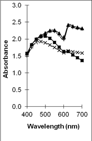 | 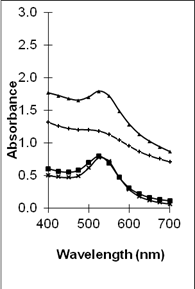 | 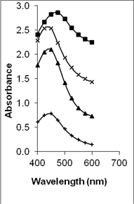 |
| (a) | (b) | (c) |
The respective metal content (wrt the metal precusors) in the organosols are summarized in Table 2 (column 3). Generally more than 80 % of the metal particles are present in the organosols. These results show that 2-propanol is an effective transferring agent. It is soluble in both the aqueous and toluene phase therefore enables transportation of metal particles from the former to the latter phase [32].
Among the various organosols that were employed in this work, 10% (v/v) of epoxy/curing agent-toluene provided the most metal particle accommodation. The presence of the epoxy in the toluene phase assists in the trapping of the metal particles. However, in the presence of curing agent, the formation of crosslink networks within the matrix, further provide effective trapping for the metal particles. It should be noted that in order to obtain an effective particle transfer, the ratio of 2-propanol to toluene as well as the composition of the organosol are crucial.
| Organosol | Metal | % Metal content in the organic phase* | Av. Size and SD (nm) | Fractal Dimension (D value) | Correlation coefficient (R) |
| 1% vol. epoxy | Copper Gold Silver |
89.4 93.6 93.5 |
3.9 ± 1.0 10.1 ± 1.5 8.1 ± 2.3 |
1.79 1.88 1.85 |
0.9976 0.9957 0.9995 |
| 1 % vol. epoxy/curing agent | Copper Gold Silver |
85.9 93.4 88.8 |
3.6 ± 1.0 3.5 ± 0.6 6.8 ± 2.6 |
1.92 1.95 1.96 |
0.9743 0.9979 0.9988 |
| 10 % vol. epoxy | Copper Gold Silver |
81.3 90.3 92.3 |
3.0 ± 1.1 8.5 ± 2.6 6.9 ± 2.1 |
1.83 2.02 1.95 |
0.9773 0.9989 0.9811 |
| 10 % vol. epoxy/curing agent | Copper Gold Silver |
90.4 95.4 93.3 |
2.5 ± 0.5 3.2 ± 0.7 5.9 ± 3.2 |
1.87 1.99 2.10 |
0.9917 0.9834 0.9549 |
*wrt the metal precursor
The FTIR spectra of neat epoxy and the typical composites of silver-epoxy and silver-cured epoxy are shown in Figure 2. The spectrum of the epoxy, shown in Figure 2(a), exhibits peaks at ~2966 cm-1 and ~2918 cm-1 that are due to the assymmetric -CH2- stretching while the peak at ~2872 cm-1 is due to the symmetric stretching of the aliphatic carbon chains [39, 40]. The stretching frequencies of the aromatic group are situated at ~3038 and 3057 cm-1. The peak at ~1509 cm-1 is due to the C=C of the 1,4-disubstituted benzene ring [36] of the epoxy while the characteristic peak of oxirane [42,43] is located at ~915 cm-1 .
There are no significant change between the peaks position in the FTIR spectrum of the neat epoxy in Figure 2(a) above, and that of the metal-epoxy composite shown in Figure 2(b). For example, the oxirane peak is at 915 cm-1. This verifies that no chemical interactions have occurred between the metal particles and the epoxy. It should be noted that traces of water, which is represented by a broad peak at ~ 3498 cm-1 [40], are observed in both spectra of Figure 2 (a) and (b). This is due to the moisture present in the neat epoxy resin precursor. However, upon the addition of curing agent into the metal-epoxy, this peak intensity is increased, shifted and broadened within the range of 3074-3444 cm-1 as shown in Figure 2(c). This is attributed to the formation of -OH functional groups as a result of reactions of the amine curing agent and the oxirane [44]. The reaction between epoxy and amine curing agent also results in the formation of the new carbon-nitrogen linkages. Figure 3 shows an example of the curing mechanism between DGEBA epoxy resins and a typical amine based curing agent [45]. The presence of the curing agent in the composite also generates an extra peak at 1625 cm-1 that is attributed to -NH2 [40] of the unreacted amine of the curing agent itself.
In the silver-epoxy composite sample previously reported by Rong et al. [13], without prior curing, one exothermic peak is observed in the thermogram. This is due to the migration of melted silver nanoparticles and the formation of larger secondary particles due to the polymer's fluidity upon heat treatment. This means the silver particles tend to rearrange and grow upon heating resulting in aggregation of the particles. Eventually this leads to the destruction of existing conducting networks and thus a decrease in the conductivity.
The DSC thermograms obtained from the first and second heating of the respective metal-cured epoxy are shown in Figure 4. The thermograms obtained from the first heating of the metal-cured epoxy composites revealed only melting peaks, as shown in Figure 4(a). These peaks are positioned at 72.3 oC, 55.5 oC and 84.8 oC for copper, gold and silver nanoparticles respectively. These melting peaks are absent in the thermograms of second heating as shown in Figure 4(b). This indicates that the metal nanoparticles are transformed to conventional metal nanocrystals during the first heating [13].
The absence of any curing peak in the DSC thermograms above suggests that the composites are well cured before any of the DSC analyses were performed. This has an important implication to the final composites because the cured epoxy matrix will restrict the movement of metal particles and thus limit the aggregations of the melted particles during the DSC heating cycles. Hence, our results have shown that though particle aggregation can occur during heat treatment of the metal-epoxy composites, the extent of aggregation can be overcome via dispersing the particles in-situ and using a RT curing agent. This enables the fixing of the dispersed particles within the matrix.
Moreover, from Figure 4(b), the respective glass transition temperature (Tg) of metal-cured epoxy composites also support the above findings. Tg of neat epoxy, cured epoxy and the metal-cured epoxy composites are tabulated in Table 3. Neat epoxy shows low Tg at -12.6 oC. Upon curing this epoxy, the Tg is shifted to a higher temperature ca. 42.6 oC. This is due to the cross-linking reactions that resulted in a decrease in free volume of the epoxy as well as the restriction in the movement of the polymer chains. Upon incorporation of the metal nanoparticles, the Tg of the metal-cured epoxy is further increased to 71.3 °C, 69.8 °C and 62.0 °C for copper, gold and silver respectively. This is common for the inorganic-epoxy composites and is attributed to the particle-matrix interactions as well as further decrease in free volume of the matrix [46].
| Epoxy/Composite | Tg (°C) |
| Neat epoxy Cured epoxy Cu-cured epoxy Au-cured epoxy Ag-cured epoxy |
-12.6 42.6 71.3 69.8 62.0 |
Figure 4. The DSC thermograms for various metal nanoparticles, (i) Cu, (ii) Au and (iii) Ag, in 10% (v/v) epoxy/curing agent (a) first heating and (b) second heating scan.
TEM images of the various samples prepared are shown in Figure 5. Figure 5(a) and (b) demonstrate that some degree of self-assembly of the particles occurs for all metals, regardless of the amount of epoxy used. However, this phenomenon is more obvious for the gold nanoparticles. Furthermore, it is also found that at higher contents of epoxy (i.e. 10% v/v) the self-assemblies are less compact and seem to deteriorate especially for copper and silver. The particles are dispersed with a narrow space between them. The average inter-particle spacing of gold, silver and copper nanoparticles is 1.73 nm, 3.61 nm and 3.15 nm respectively. It is well known that electrical conduction and tunneling effect can occur if the spacing between the particles is small (< 10 nm) [9]. Hence, the inter-particle spacing in these samples is suitable for electrical conduction.
The average metal particle sizes and SD values of the metal-epoxy composites are tabulated in Table 2 (column 4). Generally, as the epoxy content is increased, the average size of the particles is decreased i.e. from 3.9 ± 1.0 nm to 3.0 ± 1.1 nm for copper, from 10.1 ± 1.5 nm to 8.5 ± 2.6 nm for gold and 8.1 ± 2.3 nm to 6.9 ± 2.1 nm for silver. Upon curing the epoxy, the particle dispersion and assemblies remain intact. This is shown in Figure 5(c) and 5(d). Even so, a decrease in the average size as well as the size distribution of the particles is observed when the metal particles are formed in these samples when compared to those prepared in epoxy only.
The particle formation in epoxy can be explained as due to polymer chains which accommodate the metal particles and thus prevent aggregation or retard the Oswald ripening process. The increase in amount of epoxy from 1 % to 10 % enhances this effect. More polymer chains are available restricting the metal particles formed from coming in close contact with each other and growing. This is reflected by the decrease in particle size with increase in epoxy content as mentioned previously. Upon curing the epoxy, cross-linking reactions via the oxirane and amine occurs. This forms networks that have the ability to lock and trap the growing particles in the inter-chain voids within the networks. Thus this creates an environment that constrains further growth of the metal particles in the cured matrix when compared to epoxy solely. A similar phenomenon as for the effect of epoxy content on the formation of the respective particles, is observed when the epoxy/curing agent content is increased from 1 % to 10 %.
| Cu | Au | Ag | |
| (a) | 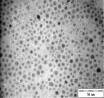 | 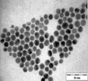 | 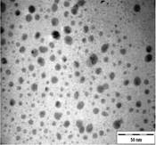 |
| (b) | 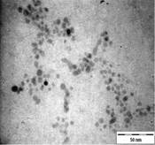 | 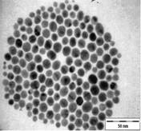 | 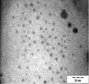 |
| (c) | 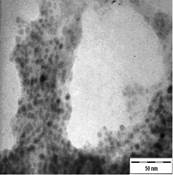 | 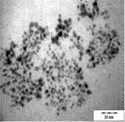 | 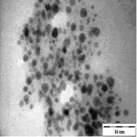 |
| (d) | 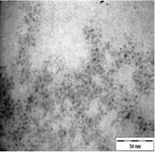 | 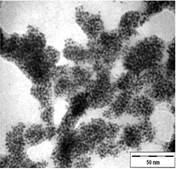 | 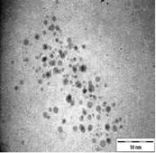 |
In order to have a better understanding on the homogeneity of the dispersion of metal particles within the matrix, a fractal technique was applied [29] to the TEM images of Figure 5. This technique involves drawing of a few circles with a fix radius, r randomly onto the fractal image followed by a series of circles of increasing r value. Next, the micrograph is manually digitized using 'ones' and 'blanks' which corresponds to the presence and the absence of particles. Then, the number of particles, M, within each circle of different radii, r is counted. For circles with the same radius, an average value of M is calculated. The fractal dimension, D is obtained from the slope of the plot of ln M against ln r as shown in Figure 6. A smaller fractal dimension reflects a higher homogeneity of the particles in the matrix [29]. The obtained D values and their correlation coefficient (R) are tabulated in Table 2 (column 5 and 6). Generally, the fractal dimension of the metal in epoxy (Figure 5(a-b)) is smaller than those in the respective cured epoxy (Figure 5(c-d)). This means that the metal particles are better dispersed in epoxy alone. This is obvious as no compartmental constrain is imposed on the particles in this matrix. Even so, it is interesting to note that comparison between the metal nanoparticles demonstrate that the dispersion of gold particles is least affected upon addition of the curing agent when compared to silver and copper. This phenomenon is yet to be understood. It should be noted that the correlation coefficient (R) obtained for all the plots are > 0.9. This suggested a strong and positive association between the variables (i.e. ln M and ln r).
4. Conclusion
The synthesis of metal particles in aqueous phase and the subsequent in-situ transfer of these particles to an organic phase containing epoxy or epoxy-curing agent were successfully performed. UV-vis spectra confirmed the formation of metal nanoparticles in the organic phase. More than 80% of the metal nanoparticles were transferred into the organic phase according to AAS analyses. No chemical interactions occurred between the metal nanoparticles and the epoxy. The DSC analyses showed no curing peaks in all of the samples, suggesting that the composites were well cured before DSC analyses were performed. This eliminates the secondary growth of metal particles which can be attributed to the RT curing agent. TEM results revealed that metal particles show some degree of self-assembly in epoxy. A close-packed particle arrangement was observed especially for gold nanoparticles. The inter-particle spacing between the respective metal particles are small (ca. < 10 nm) and thus are suitable for conduction. Overall, all metal particles showed a trend where the average particles size decreased as the epoxy and epoxy/curing agent content is increased. This is due to the particle growth restriction by the epoxy and curing agent. In addition it is found that the metal particle dispersion in epoxy is more homogeneous when compared to those prepared in the cured epoxy. Based on these results we have demonstrated a convenient and effective method to disperse metal nanoparticles in epoxy resin. This preparation technique also promotes the formation of small sized nanoparticles which have some degree of self-assembly.
| 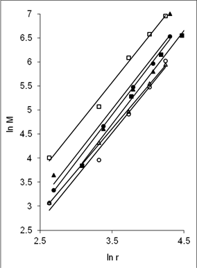 (a) |
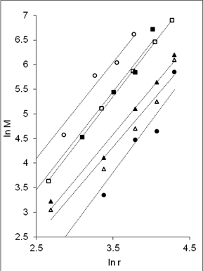 (b) |
Acknowledgements
The authors would like to thank INTEL Technology (M) Sdn Bhd (Grant No. 304/PKIMIA/650341/I104) as well as Universiti Sains Malaysia (Grant no. 1001/PKIMIA/811091) for the financial assistance granted to this project.
References
[1] R. V. Young, World of Chemistry, Gale Group, USA, 2000, pp. 748-749.
[2] B. Zhang, C. Xie, J. Hu, H. Wang, and Y. H. Gui, Compos. Sci. Technol., vol. 66, pp. 1558-1563, 2006. View Article
[3] Z. Han and A. Fina, Progress Polym. Sci., vol. 36, pp. 914 - 944, 2011. View Article
[4] W. L. Tan and M. Abu Bakar, J. Alloys Comp., vol. 561, pp. 40 - 47, 2013. View Article
[5] N. Misra, V. Kumar, J. Bahadur, S. Bhattacharya, S. Mazumder, and L. Varshney, Prog. Org. Coat., vol. 77, pp. 1443 - 1451, 2014. View Article
[6] L. Fang, W. Wu, X. Huang, J. He, and P. Jiang, Comp. Sci. technol., vol. 107, pp. 67 - 74, 2015.
[7] T. J. DeJournett and J. B. Spicer, Sol. Energy Mater. Sol. Cells, vol. 120, pp. 102 - 108, 2014.
[8] J. C. Colmenares, E. Kuna, S. Jakubiak, J. Michalski, and K. Kurzydlowski, Appl. Catal., vol. 170-171, pp. 273-282, 2015. View Article
[9] D. I. Tee, M. Mariatti, C. H. See, and K. F. Chong, Proc. of the Int. Electron. Manufacturing Technology (IEMT) Conf., Petaling Jaya, Malaysia, 2006, pp. 496 - 505. View Article
[10] F. El-Tantawy, A. Bakry, and A. R. El-Gohary, Polym. Int., vol. 49, pp. 1670 - 1676, 2000.
[11] F. Y. C. Boey and B. H. Yap, Polym. Test., vol. 20, pp. 837-845, 2001. View Article
[12] S. Bal, Mater. Design, vol. 31, pp. 2406 - 2413, 2010. View Article
[13] M. Rong, M. Zhang, H. Liu, and H. Zeng, Polymer, vol. 40, pp. 6169 - 6178, 1999. View Article
[14] Y. H. Wang, N. N. Xiong, H. Xie, Y. Z. Zhao, and J. Li, J. Mater. Sci.: Mater. Elect., vol. 26, pp. 621-629, 2015.
[15] S. K. Kang, R. S. Rai, and S. Purushothaman, Packaging Manufacturing Tech. Part A, vol. 21, pp. 18, 1998. View Article
[16] H. Ren, S. Tang, J. A. Syed, and X. Meng, Mater. Chem. Phys., vol. 137, pp. 673 - 680, 2012. View Article
[17] F. H. Gojny, H. G. Wichmann, B. Fiedler, I. A. Kinloch, W. Bauhofer, A. H. Windle, and K. Schulte, Polymer, vol. 47, pp. 2036 - 2045, 2006. View Article
[18] I. P Blanco, C. E. Hoppe, M. A. L. Quintela, and J. Rivas, J. Non-Cryst. Solids, vol. 353, pp. 826-828, 2007.
[19] B. Sljukic, R. Baron, C. Salter, A. Crossley, and R. G. Compton, Anal. Chim. Acta., vol. 590, pp. 67 - 73, 2007. View Article
[20] W. T. Cheng, Y. W. Chih, and W. T. Yeh, Int. J. Adhes. Adhes., vol. 27, pp. 236-243, 2007.
[21] S. Chen, K. Liu, Y. Luo, D. Jia, H. Gao, G. Hu, and L. Liu, Int. J. Adhes. Adhes., vol. 45, pp. 138-143, 2013. View Article
[22] S. Nam, H. W. Cho, T. Kim, D. Kim, and B. J. Sung, Appl. Phys. Lett., vol. 99, 2011. View Article
[23] C. Chen, Y. Tang, Y. S. Ye, Z. Xue, Y. Xue, X. Xie, and Y. W. Mai, Comp. Sci. Technol., vol. 125, pp. 80 - 85, 2014. View Article
[24] D. Chen, X. Qiao, X. Qiu, F. Tan, J. Chen, and, R. Jiang, J. Mater. Sci.: Mater. Elect., vol. 21, pp. 486-490, 2010. View Article
[25] D. Chen, X. Xiao, X. Qiu, and J. Chen, J. Mater. Sci., vol. 44, pp. 1076 - 1081, 2009. View Article
[26] O. B. Montes, M. I. Nieto, and R. Moreno, Ceram. Int., vol. 33, pp. 327-332, 2007. View Article
[27] C. V. Santilli, S. H. Pulcinelli, M. S. Tokumoto, and V. Briois, J. Eur. Ceram. Soc., vol. 27, pp. 3691 - 3695, 2007. View Article
[28] J. H. Baek, J. S. Kim, M. J. Moon, and M. S. Lee, J. Nanosci. Nanotechnol., vol. 15, 5314 - 5317, 2015. View Article
[29] J. Z. Liang, Compos. Part A - Appl. Sci. Manufac., vol. 38, pp. 1502 - 1506, 2007. View Article
[30] N. Pradhan, A. Pal, and T. Pal, Colloid Surf. A, vol. 196, pp. 247-257, 2002. View Article
[31] G. N. Glavee, K. J. Klabunde, C. M. Sorensen, and G. C. Hadjipanayis, Langmuir, vol. 10, pp. 4726-4730, 1994. View Article
[32] M. Abu Bakar, J. Ismail, C. H. Teoh, W. L. Tan, and S. Ong, J. Rubb. Res., vol. 11, 196-208, 2008. View Article
[33] V. S. Gurin, A. A. Alexeenko, S. A. Zolotovskaya, and K. V. Yumashev, Mater. Sci. Eng. C, vol. 26, pp. 952 - 955, 2006. View Article
[34] M. E. Garcia, L. A. Baker, and R. M. Crooks, Anal. Chem., vol. 71, pp. 256 - 258, 1999. View Article
[35] I. P. Santos, C. S. Rodriguez, and L. M. Liz-Marzan, J. Colloid. Interf. Sci., vol. 221, pp. 236-241, 2000.
[36] J. Rozra, I. Saini, A. Sharma, N. Chandak, S. Aggarwal, R. Dhiman, and P. K. Sharma, Mater. Chem. Phys., vol. 134, pp. 1121, 2012. View Article
[37] M. Singh, I. Sinha, A. K. Singh, and R. K. Mandal, Colloids Surf. A: Physicochem. Eng. Aspects, vol. 384, pp. 668, 2011. View Article
[38] T. Yamaguchi, E. Kazuma, N. Sakai, and T. Tatsuma, Chem. Lett., vol. 41, pp. 1340, 2012. View Article
[39] A. C. Chihani, M. Mouzali, and M. J. M. Abadie, J. Appl. Polym. Sci., vol. 87, pp. 2033-2051, 2003.
[40] D. L. Pavia, G. M. Lampman, and G. S. Kriz, Introduction to Spectroscopy, 2nd edition, Saunders College Publishing, 1996.
[41] F. Delor-Jestin, D. Drouin, P-Y. Cheval, and J. Lacoste, Polym. Degrad. Stab., vol. 91, pp. 1247-1255, 2006. View Article
[42] W. Possart, J. K. Kruger, C. Wehlack, U. Muller, C. Petersen, R. Bactavatchalou, and A. Meiser, Compt. Rend. Chim., vol. 9, pp. 60 - 79, 2006. View Article
[43] F. Bauer, U. Decker, H. Ernst, M. Findeisen, H. Langguth, R. Mehnert, V. Sauerland, and R. Hinterwaldner, Int. J. Adhes. Adhes., vol. 26, pp. 567 - 570, 2006. View Article
[44] F. Mustata and I. Bicu, Polym. Test., vol. 20, pp. 533 - 538, 2001. View Article
[45] K. Dean, W. D. Cook, M. D. Zipper, and P. Burchill, Polymer, vol. 42, pp. 1345 - 1359, 2001. View Article
[46] N. A. D'Souza, Encyclopedia of Nanoscience and Nanotechnology, vol. 3, pp. 253, 2004.